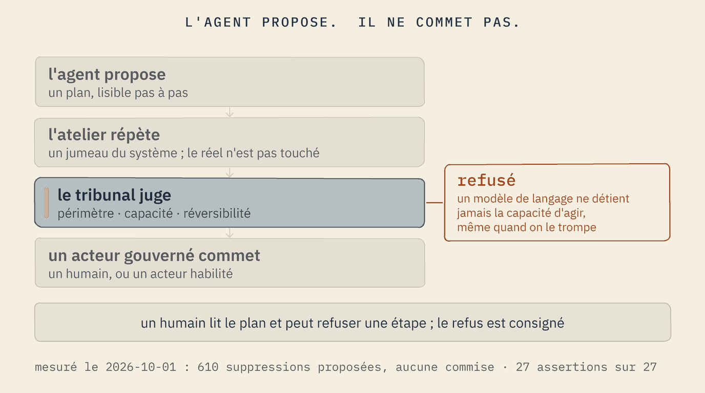
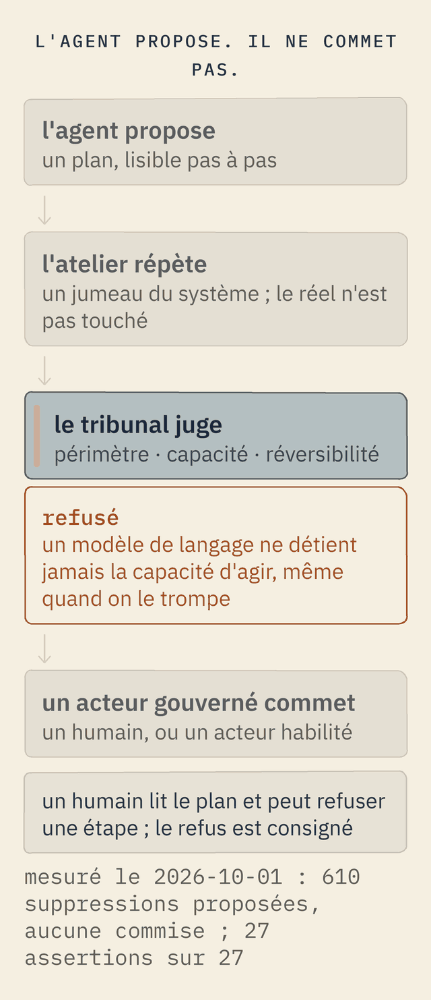

L'agent propose. Il ne commet pas.
Les machines écrivent et agissent désormais. La réponse de Softanza n'est pas de leur faire confiance avec plus de soin ; c'est de changer l'endroit où elles ont le droit de se tenir. Un agent d'IA parle une langue déclarée, répète dans un atelier, fait face à un tribunal, et ne détient jamais la capacité de commettre.
Une langue Softanza a six lecteurs : le programmeur, l'analyste, le designer, le décideur, l'éducateur, et l'agent d'IA. L'agent est celui pour qui elle a été conçue en dernier, et celui qui la parle le plus. Quatre choses rendent cette rencontre sûre.


1 · La grammaire contraint
Chaque langue déclarée émet sa grammaire de contrainte, et le décodeur du moteur rend impossible l'émission d'un jeton qui la viole. L'agent ne peut prononcer que des phrases valides. La malformation meurt par construction ; la fausseté fait toujours face au tribunal.
2 · L'atelier répète
Chaque écriture de fichier, chaque suppression, chaque mise à jour de mémoire va dans un jumeau virtuel qui ne tient aucune référence au réel. Le vrai fichier existe toujours ; l'atelier tient la version proposée. La seule sortie de l'agent est un plan, lisible opération par opération.
3 · Le tribunal juge
Un acteur qui ne dit pas ce qu'il couvre, ni si ses actes sont réversibles, est refusé avant son premier pas. Le plan passe le périmètre, les capacités, la gouvernance. Le risque et l'irréversibilité sont deux axes séparés : un petit acte qu'on ne peut défaire mérite plus de cérémonie qu'un grand acte qu'on peut défaire.
4 · Un acteur gouverné commet
Un modèle d'IA ne détient jamais la capacité « à effet » : il ne commet rien, même trompé. Un humain, ou un acteur habilité, commet ; un humain peut rejeter une seule étape, et le refus est consigné.
What it WOULD have done (610 operations): Update plan (610 of 610 operations to commit): * 1. delete file '…/courses/elementary-introduction/course.zknw' * 2. delete file '…/courses/elementary-introduction/curriculum.zknw' * 3. delete file '…/chapters/01-find-then-apply.ar.md' ...
An AI helper asks to commit the plan:
actor 'amina-helper-llm' cannot commit
-- it lacks the 'effectful' capability
(required by operation 1)
PROVED the court admitted the declaration
PROVED the agent rehearsed every deletion
PROVED the course folder still holds all 610 files
PROVED an AI cannot commit what the agent proposedexécuté le 2026-09-30 à 23:10 par la démonstration pour décideurs(s'ouvre dans un nouvel onglet), scène 6 ; le même mécanisme avec un relecteur humain qui rejette une étape est le garde virtual_system_twin_narrated(s'ouvre dans un nouvel onglet), scène 5
La manière Softanza La sécurité n'est pas une consigne qui demande au modèle d'IA d'être prudent. C'est une architecture dans laquelle le modèle n'a rien avec quoi être prudent.
Ce qui rend l'esprit d'un agent programmatique et non un modèle d'IA dans une boucle, c'est une échelle de motifs, de facultés et d'agents : le Softanzuter.